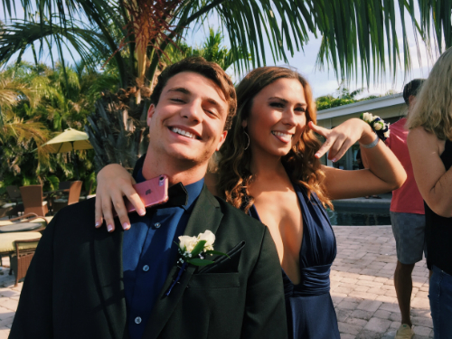

Overview | Media | Author
Taso Halverson
Taso Halverson is a soccer fanatic that has been following the Real Madrid soccer team since he was 8 years old. He played soccer for 14 years and continues to enjoy and research the sport.
